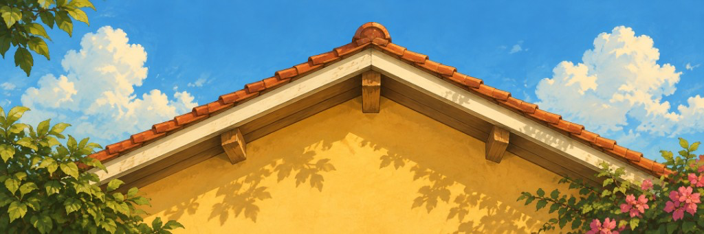
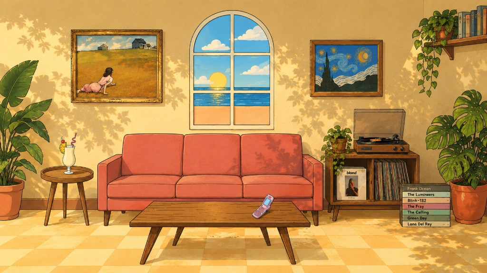
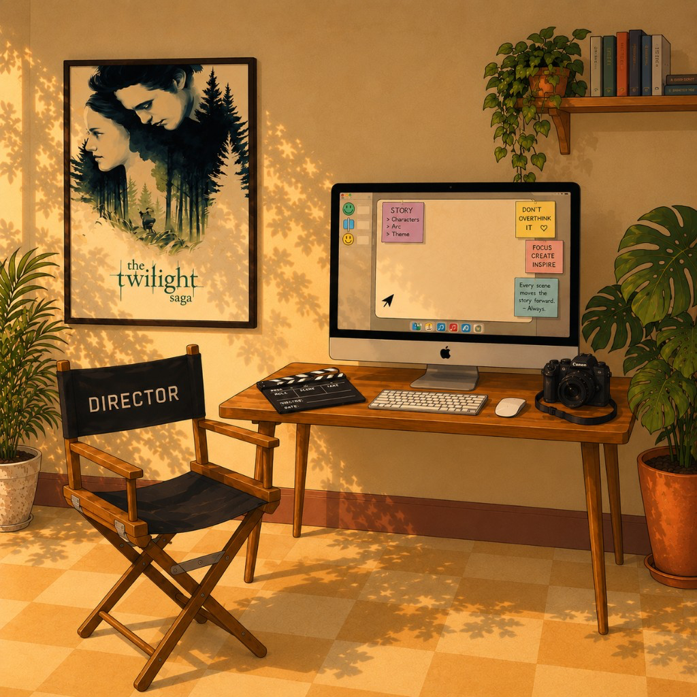
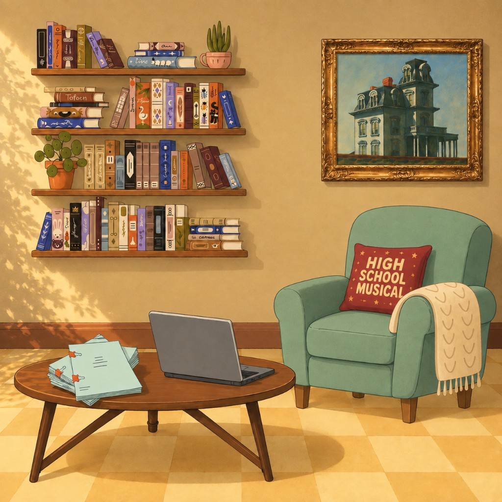
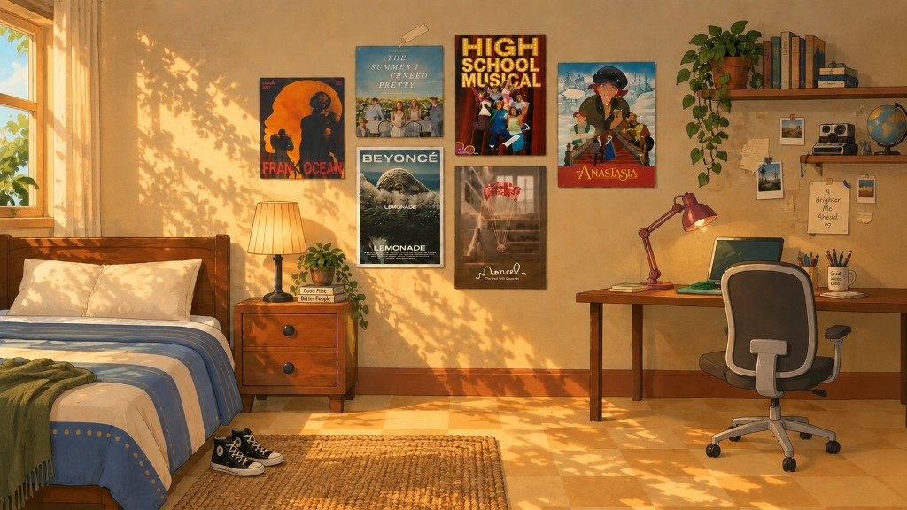

Open menu
Home
Work
About me
Say Hi!

Up on the roof

Living room
A note about the painting on the left
It was the first painting that actually moved me, in my life. I like the emotion behind it. I like to see her keep going, despite the fact that everything she wants is so hard to reach.
A note about the painting on the right
I didn’t care for this until I saw it in real life. It was mesmerizing
A note about the window
I am from Goa, and this makes me feel at home
A note about the piña colada
The best drink you can drink and I think only the best Bartenders can make it. And I drank the best Pina Colada of my life at Attaboy in NYC
A note about the phone on the table
I miss when design looked like this. This was so cool to me, because now everything looks the same

Producer work
Sneha’s office
A note about the Twilight poster
This is an obsession I can’t shake; it went from ironic to unironic and now it is my personality

Writing work
Sneha’s writing den

Sneha’s bedroom
A note about the High School Musical poster
HIGH SCHOOL MUSICAL: Definitely formative for me — I used to recreate scenes with my cousin where I was Troy and she was Gabriella. A tween OBSESSION
A note about The Summer I Turned Pretty poster
I loved an obsession, as you can tell, and I love a fandom — I am part of all of them — but I love nothing more than a show that has the soundtrack to capture the exact moment of time we are in, and hence I think that show makes me feel in 2026 the same way One Tree Hill made me feel in the 2000s
A note about the Beyoncé Lemonade poster
This concept album made me take high-concept music videos seriously, like they were short films